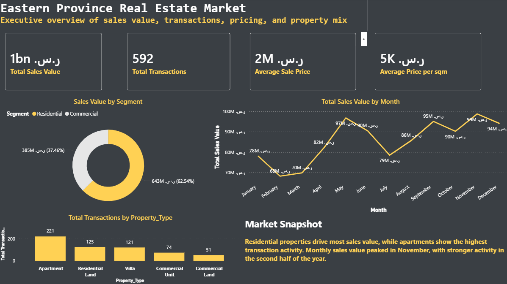
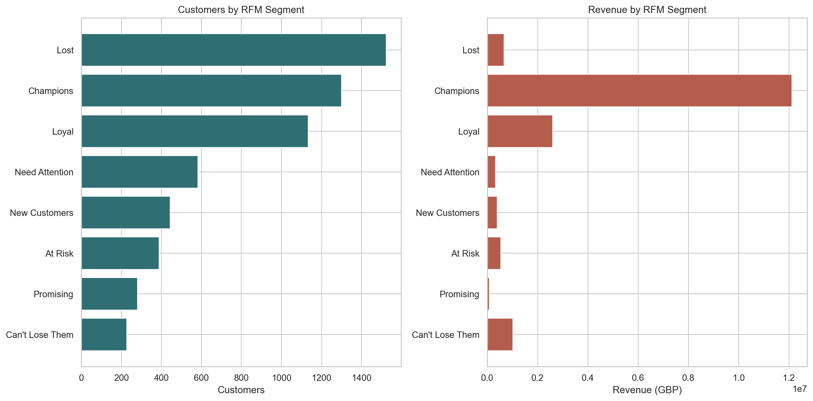
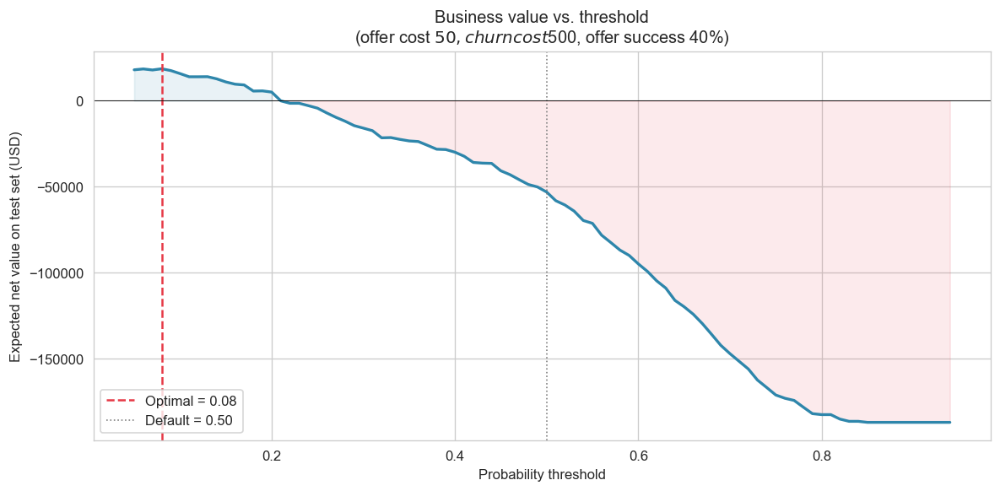
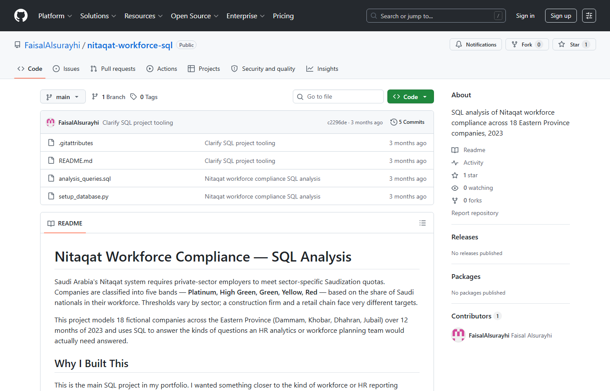
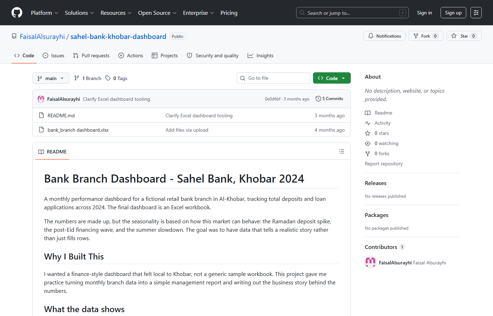
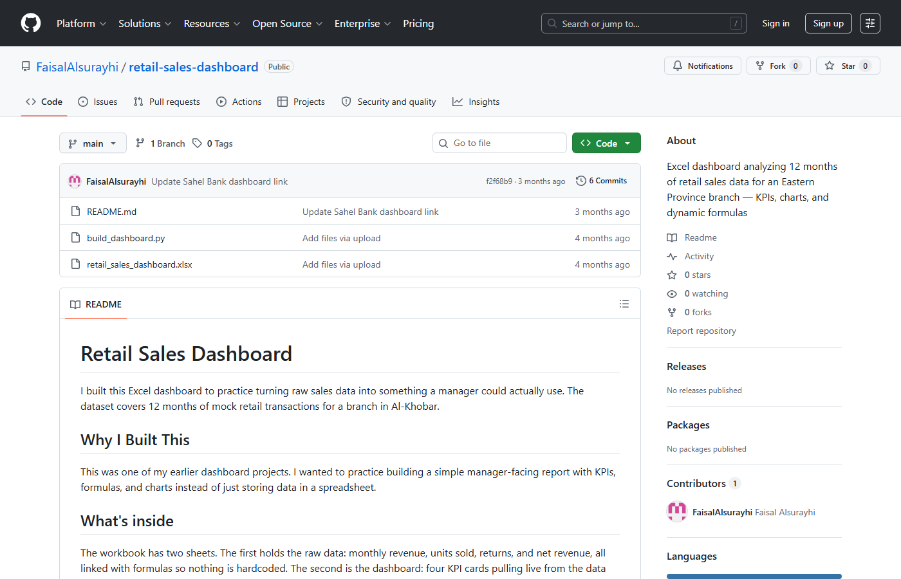

profile.status
role: Business Data Analyst
tools: Power BI · SQL · Python · Excel
focus: BI, retention, operations, people analytics
Business Data Analyst · Al Khobar, Saudi Arabia
I translate messy business data into clear dashboards, models, and decisions across customer, operations, workforce, and market analytics.
profile.status
role: Business Data Analyst
tools: Power BI · SQL · Python · Excel
focus: BI, retention, operations, people analytics
Selected projects
Featured Power BI project
Executive Power BI dashboard analyzing city activity, property types, transaction patterns, sales value, and price per square meter across the Eastern Province real estate market.
Open real-estate project ↗

Project screenshotCustomer analytics · RFM segmentation
Analyzed 805K+ retail transactions and built an RFM segmentation model showing that 22.1% of customers generated 68.4% of revenue.
View project ↗Real estate analytics · Power BI dashboard
Designed an executive Power BI dashboard comparing city activity, property types, transaction patterns, and price per square meter across the Eastern Province market.
View project ↗
Power BI dashboardPredictive analytics · Retention economics
Built a churn model and evaluated decision thresholds using retention cost, customer lifetime value, and intervention assumptions.
View project ↗Market intelligence · Power BI
Designed an executive Power BI dashboard comparing city activity, property types, transaction patterns, and price per square meter across the Eastern Province market.
View project ↗
SQL artifactWorkforce economics · SQL & Python
Modeled Saudization compliance across firm-size tiers and used SQL queries to evaluate localization patterns.
View project ↗
Workbook dashboardFinancial analytics · SQL & Excel
Compared profitability and asset-quality KPIs across major Saudi banks using 2020–2023 Tadawul annual reports.
View project ↗
Workbook dashboardRetail analytics · Excel dashboard
Built an Excel dashboard analyzing 12 months of retail sales data with KPI cards, charts, dynamic formulas, and branch-level performance insights.
View project ↗Skills
KPI reporting, executive views, recurring weekly and monthly reporting.
Cleaning, validation, joins, reporting queries, and structured analysis.
Customer segmentation, churn modeling, EDA, and decision thresholds.
Turning technical findings into priorities that business teams can act on.
Experience
George Mason University
Capital One
Saudi Ground Services
About
I’m an economics graduate from George Mason University focused on customer analytics, operations reporting, workforce strategy, and market intelligence.
I work in Arabic and English, and I like analytics that feels practical: clean enough for executives, detailed enough for operators, and honest enough to support better decisions.
Contact